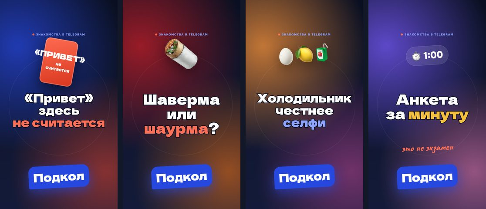

Что я делаю сам от идеи до запуска: приложения, сайты, лендинги и медиа. Продукт, тексты, дизайн, разработка с ИИ и продвижение. Автопостинг, боты и n8n-сценарии собраны на странице «Автоматизации».
Завод стальных входных дверей в Санкт-Петербурге: 2 завода полного цикла и 23 салона в СПб, Ленобласти и на Северо-Западе. Старый сайт на Битриксе без лицензии и бэкапов перестал открываться. Я сделал новый быстрый сайт, а Битрикс оставил только для обмена с 1С и цен.
36моделей и серия «Райтвер Дизайн»
23салона на карте
300+редиректов со старых адресов
Каталог с подбором двери по типу и цене, цены из 1С обновляются раз в час
Конструктор «Райтвер Дизайн» на 88 комбинаций и игра «Соберите дверь» на главной
Салоны на Яндекс Картах, город посетителя определяется автоматически
Формы заявок с серверной проверкой и защитой от ботов
SEO: микроразметка товаров, хлебных крошек и FAQ, Метрика, cookie и согласия по закону
Главная легче на 1,8 МБ: сжатые фото и правильные размеры миниатюр
Что делал структура, тексты, дизайн, вёрстка, интеграция с Битриксом и 1С, SEO, перенос со старого сайта
Стек HTML, CSS, JavaScript, PHP (заявки, цены, гео), сборка на Python, Яндекс Карты
Велнес-город со студиями и виллами у Virgin Beach на востоке Бали. Покупатели — европейцы, которые хотят жить на Бали или вложиться в недвижимость. Я сделал сайт продаж на английском и немецком и CRM для отдела продаж.
2языка: EN и DE
15блоков на главной
заявки сразу в Telegram
Подача бренда «Just be.»: студии, готовая вилла и виллы по очередям с ценами и наличием
Блоки для инвестора: гарантия дохода, этапы стройки, юридическая схема покупки
Квиз из 4 шагов, PDF-гид покупателя, FAQ, форма консультации и WhatsApp
Заявки с сайта сразу приходят менеджеру в Telegram
Бренд пептидов с лабораторным контролем каждой партии. Два направления: спорт и восстановление, косметология и anti-age. Я запускаю продвижение в Telegram и VK там, где реклама таких товаров проходит модерацию с трудом.
2направления: спорт и косметология
≈100предложений площадкам и блогерам
Сегменты и тексты под спортсменов и косметологов, тесты офферов
Креативы под Telegram Ads, посевы и VK: квадрат, 4:5, 16:9 и видео 9:16
Посевы в Telegram-каналах через Telega.in и напрямую с админами
Рассылка предложений админам каналов автоматизирована на Python: паузы и учёт лимитов Telegram
Кампании в VK Рекламе по сегментам, плейбук под требования модерации, ТЗ на пиксель для разработчика
Что делал стратегия, тексты, креативы, закупка рекламы, автоматизация переписки
Инструменты Telegram Ads, Telega.in, VK Реклама, Python (Telethon), Google Таблицы

Свой продукт · Telegram mini-app
Подкол
Знакомства через юмор внутри Telegram. Вместо лайка человек отвечает шуткой на конкретный ответ из анкеты, «Привет» не принимается. Фото открываются только после 10 реплик в чате.
Анкета из трёх вопросов, ответы словами или фото, лента по городу
Чат с играми «Это или это?» и «Две правды и одна ложь», «Подкол дня» с напоминанием от бота
Жалобы, блок и модерация через бота
Метки источников (VK, YouTube, Rutube, Дзен) и воронка в статистике: старт → анкета → подкол → чат
Переезд на сервер в Амстердаме, когда Telegram перестал открываться из российского дата-центра, запасной вход для пользователей без VPN
Бренд, обложки и серия из 14 Reels и 6 роликов для YouTube под запуск
Что делал идея, продукт, тексты, бренд, промо, разработка
Симулятор жизни в Санкт-Петербурге. Город собран по реальной карте OpenStreetMap: улицы, дома, магазины и места от Дворцовой площади и Исаакия до Кронштадта и Выборга.
Создание героя: внешность, причёски, телосложение, одежда
Походки и анимации: от модельной до крадущейся, бег, прыжки, плавание
Магазины и заведения с ценами в рублях: одежда, еда, машины, питомцы, вещи для квартиры
Живой город: прохожие, машины, голуби, чайки, кошки и собаки
Что делал идея, геймдизайн, сбор карты, разработка